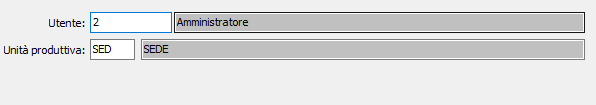

Utenti unità produttive
La tabella consente di impostare gli utenti che possono operare sulle unità produttive aziendali.

Viene richiesto l'utente di OS1 e la relativa unità produttiva; se un utente non viene configurato non potrà operare con le procedure di produzione.